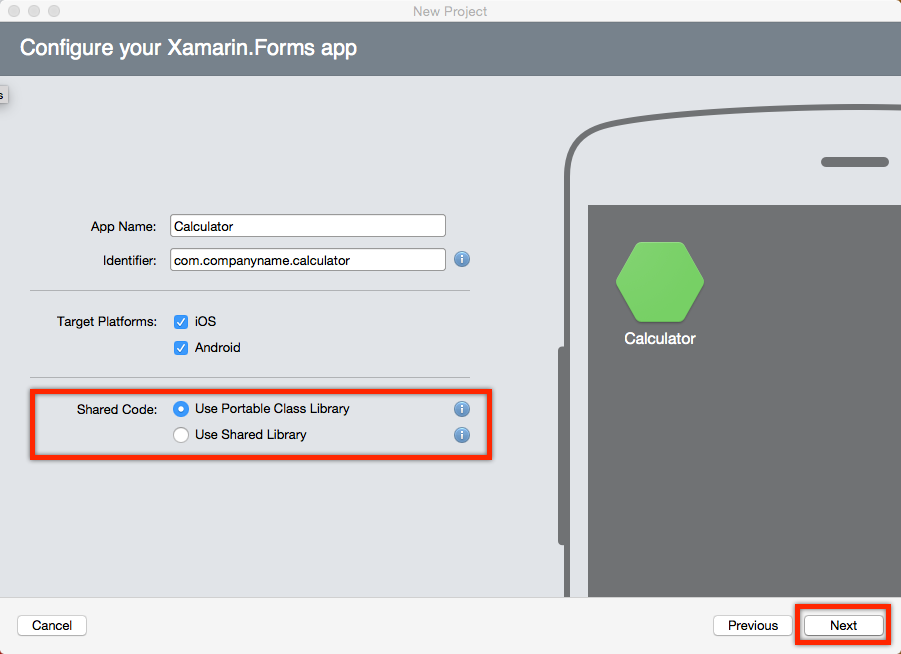
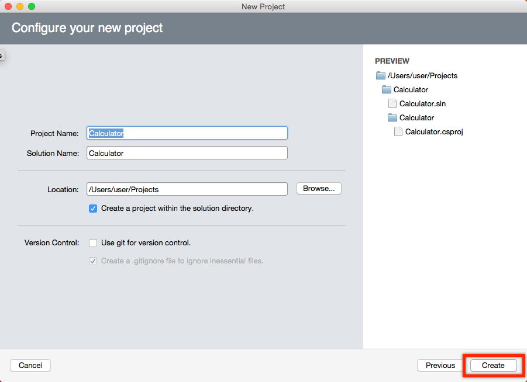
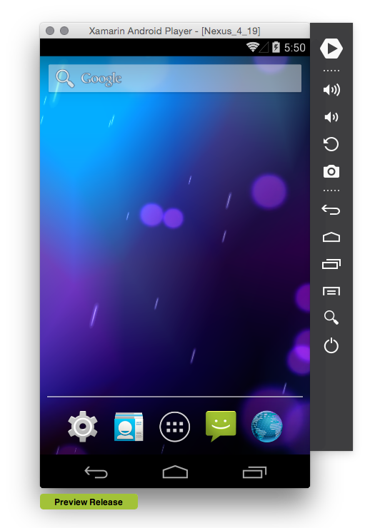

Duration
10 minutes
Lab goals
In this exercise you will create a new Xamarin.Forms application using the built-in project template in Xamarin Studio (you can also use Visual Studio on Windows, the instructions are similar). You will then choose an available platform and run the application using an emulator.
Steps
This is a group exercise, intended to be done with the instructor or the video of the class, however if you would like to walk through the exercise on your own, the required step-by-step instructions for completing this exericise are below. You can also utilize the high-level goals defined above to work through the code, relying on the below instructions to fill in any necessary details.
Create a new Xamarin.Forms application
- Launch either Xamarin Studio (Windows or Mac OS X) or Visual Studio (Windows) and create a new solution through File > New > Solution or by clicking the New Solution... link on the Welcome screen shown below to create a new solution.
- In the New Solution dialog, select the section on the left titled Cross-platform/App, and select the Blank App (Xamarin.Forms) project in the main section of the dialog as shown below and click Next.
- Give the App the name Calculator and select the Use Portable Class Library for Shared Code and click Next.
- Give the project the name Calculator - this will also fill out the solution name with the same value, this is fine but if you can change it if you like as well. Make sure to select a location that you can remember and get to fairly easily and then click Next.
-
Once the application has been created, you will find multiple projects listed in the solutuion explorer - depending on the IDE you are using (Visual Studio or Xamarin Studio), and which operating system you are using, the number of projects will be slightly different. However, you will always have at least two:
- A portable project which will hold all your application code. This is almost always the first project in the list and might have a suffix of (Portable) on it.
- One or more platform projects which are the actual applications that will run on each platform you create the application for - iOS, Android and Windows Phone. Again, your environment may not support all three project styles, so depending on your operating system (Windows or Mac OS X) and your IDE, the platform projects will change.
- If you look carefully, you will notice that one of the projects (the first one in the screen above) is in Bold. This is the startup project which is the one that will be started if we ask the IDE to build and run the application.
- It turns out that the portable project is not actually something that can run on it's own - we have to select one of the platform projects and make one of them the startup project. To do that, right-click on the project you want to run (iOS, Android, or Windows Phone) and select Set as Startup Project. You can also click on the gear icon next to the project to get the same menu as shown below. Once you select one of these projects, it will switch to be the bold project.


We now will execute the application in one of the supported environments. You can pick any of the platforms you want, or even more than one if you'd like to try different mobile operating systems and emulators. Click the links to jump to the specific instructors for the platform you want to execute:
Run the Android application
In this section, we will run the Android version of our application. If you do not want to try the Android version, then skip ahead to one of the other versions. We will be using an emulator, but you can also use a physical device if you have one with a few setup steps.
- Android requires an Android emulator to execute the program. The easiest one to use is the Xamarin Android Player, if you have not installed it yet, go to http://xamarin.com/android-player, scroll down to the bottom of the page and download it for either OS X or Windows.
- If you'd like to read about how to use the emulator, check out the documentation online.
- Once it's installed, go ahead and run it using either Finder (OS X) or your Start Menu/Screen in Windows. The first time it is executed, it will show you the device manager and allow you to download an image.
- Select the Nexus 4 (KitKat) image and download it by clicking the arrow next to it.
- Once it's installed, you can run the emulator by clicking the Play button next to the installed image in the device manager and the player will launch. You are then ready to run your app! 
- In your IDE, make sure the Android project is the startup project (it should be in bold), if not, right-click on it and set it as the startup.
- Next, pull down the devices list in the toolbar and locate your Nexus 4 emulator. If you are using Visual Studio and you don't see a list of devices, make sure the Android toolbar is visible by right-clicking on the toolbar area and clicking on Android.
- Next, pull down the devices list in the toolbar and locate your Nexus 4 emulator.
- Click the Play button in the toolbar to launch the application in the emulator.
- It should launch the emulator (if it wasn't already running), install your application (which make take 30-60 seconds the first time) and then run it. You should see something like:

Visual Studio
 |
 |
Xamarin Studio

 |
 |

Run the iOS application
In this section, we will run the iOS version of our application. If you do not want to try the iOS version, then skip ahead to one of the other versions. We will be using the built-in iOS Simulator that comes with Apple's tools, but you can also use a physical device if you have one with a few setup steps.
-
In order to build iOS applications, you have to install the Apple developer tools, which is all packaged up in their development environment - XCode. You can install XCode using the Mac App Store through the
 > App Store ... menu item. Search for XCode and click the Free button to install it. It's quite large and may take a while to install onto your machine.
> App Store ... menu item. Search for XCode and click the Free button to install it. It's quite large and may take a while to install onto your machine.
- Once it's there, you will have access to the iOS Simulator. This can launched automatically by Xamarin Studio when you are running an iOS application.
- Make sure the iOS application is selected as the startup project and then select the iPhone 4s simulator from the devices drop-down.
- Click the Play button in the toolbar to launch the application in the emulator.
- It should launch the iOS simulator (if it wasn't already running), install your application and then run it. You should see something like:


Run the Windows Phone application
In this section, we will run the Windows Phone version of our application. If you do not want to try the WinPhone version, then skip ahead to one of the other versions. We will be using the built-in Windows Phone Emulator that comes with Microsoft Visual Studio, but you can also use a physical device if you have one with a few setup steps.
- In order to build the Windows Phone application, you must be running on Windows and be using Visual Studio 2013. In addition, you must have the Windows Phone software development kit (SDK) installed. This is an option when you install Visual Studio, if you did not select it, you will need to reinstall Visual Studio (which will modify your installation) and select the Windows Phone 8.0 SDK. This may require a reboot in order to turn on Hyper-V which is used by the emulator. Here are some additional updates from Microsoft you can install if you like.
- Once it's there, you will have access to the Windows Phone Emulator. This can launched automatically by Visual Studio when you are running an Windows Phone application.
- Make sure the Windows Phone application is selected as the startup project and then select the Emulator 8.1 WVGA 4 inch 512M from the devices drop-down, this is the default but you can verify it by clicking the arrow on the button.
- Click the Play button in the toolbar to launch the application in the emulator.
- It should launch the Windows Phone Emulator (if it wasn't already running), install your application and then run it, the launch process may take a while as it starts up a virtual machine to run Windows in. You should see something like:


Summary
In this lab exercise, you created a new Xamarin.Forms application and ran it in one or more simulated environments. In the next exercise, we will begin to modify this application.